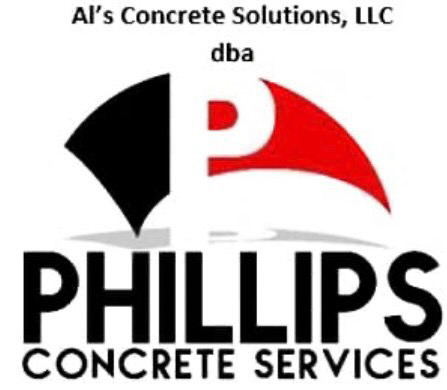

Ready-Mix • Commercial Construction • Community Impact
100% minority-owned and customer-service driven, Phillips Concrete Services is committed to quality, reliability, and growth across the St. Louis region.
Team Members
Minority Owned
Reliable Delivery
Project Expertise
Residential, municipal, and commercial concrete delivery with a focus on quality and timing.
Supporting warehouses, industrial facilities, multi-family developments, and infrastructure.
Creating pathways to employment, mentorship, and community reinvestment.